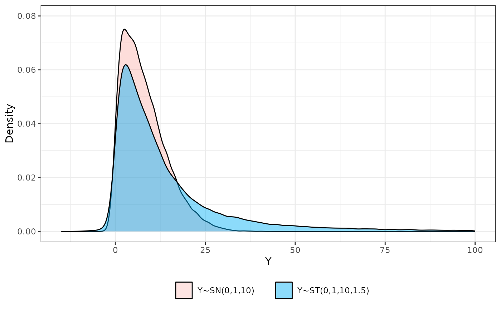

multivariate Skew-Normal probability density function
Arguments
- x
p x n data matrix with n the number of observations and p the number of dimensions
- xi
mean vector or list of mean vectors (either a vector, a matrix or a list)
- sigma
variance-covariance matrix or list of variance-covariance matrices (either a matrix or a list)
- psi
skew parameter vector or list of skew parameter vectors (either a vector, a matrix or a list)
- Log
logical flag for returning the log of the probability density function. Defaults is
TRUE.
Examples
mvnpdf(x=matrix(1.96), mean=0, varcovM=diag(1), Log=FALSE)
#> [1] 0.05844094
dnorm(1.96)
#> [1] 0.05844094
mvsnpdf(x=matrix(rep(1.96,1), nrow=1, ncol=1),
xi=c(0), psi=c(0), sigma=diag(1),
Log=FALSE
)
#> [,1]
#> [1,] 0.05844094
mvsnpdf(x=matrix(rep(1.96,2), nrow=2, ncol=1),
xi=c(0, 0), psi=c(1, 1), sigma=diag(2)
)
#> [,1]
#> [1,] -2.986451
N=50000#00
Yn <- rnorm(n=N, mean=0, sd=1)
Z <- rtruncnorm(n=N, a=0, b=Inf, mean=0, sd=1)
eps <- rnorm(n=N, mean=0, sd=1)
psi <- 10
Ysn <- psi*Z + eps
nu <- 1.5
W <- rgamma(n=N, shape=nu/2, rate=nu/2)
Yst=Ysn/sqrt(W)
library(reshape2)
library(ggplot2)
data2plot <- melt(cbind.data.frame(Ysn, Yst))
#> No id variables; using all as measure variables
#pdf(file="ExSNST.pdf", height=5, width=4)
p <- (ggplot(data=data2plot)
+ geom_density(aes(x=value, fill=variable, alpha=variable), col="black")#, lwd=1.1)
+ theme_bw()
+ xlim(-15,100)
+ theme(legend.position="bottom")
+ scale_fill_manual(values=alpha(c("#F8766D", "#00B0F6"),c(0.2,0.45)),
name =" ",
labels=c("Y~SN(0,1,10) ", "Y~ST(0,1,10,1.5)")
)
+ scale_alpha_manual(guide=FALSE, values=c(0.25, 0.45))
+ xlab("Y")
+ ylim(0,0.08)
+ ylab("Density")
+ guides(fill = guide_legend(override.aes = list(colour = NULL)))
+ theme(legend.key = element_rect(colour = "black"))
)
p
#> Warning: Removed 1199 rows containing non-finite outside the scale range
#> (`stat_density()`).
#> Warning: The `guide` argument in `scale_*()` cannot be `FALSE`. This was deprecated in
#> ggplot2 3.3.4.
#> ℹ Please use "none" instead.

#dev.off()